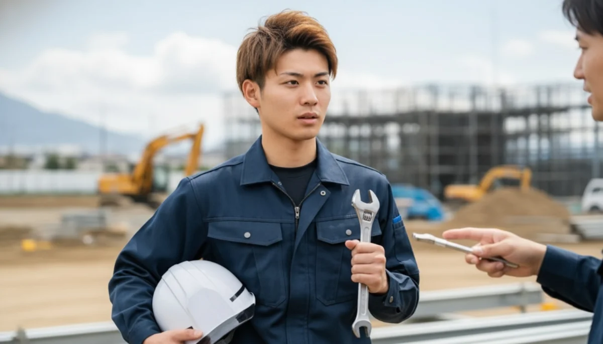
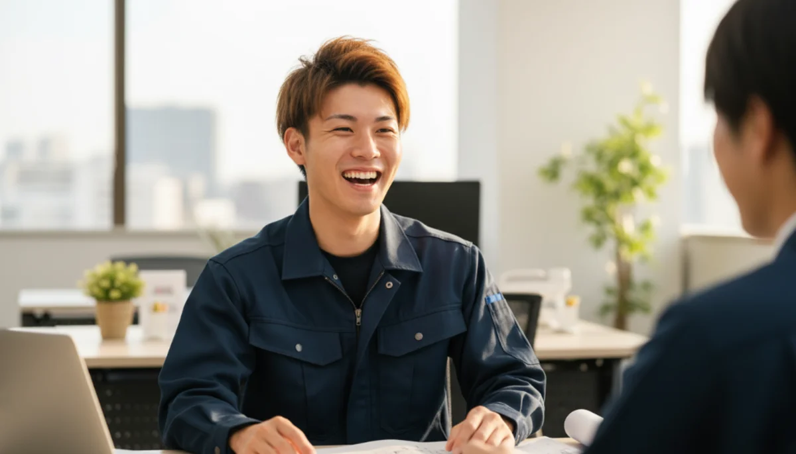
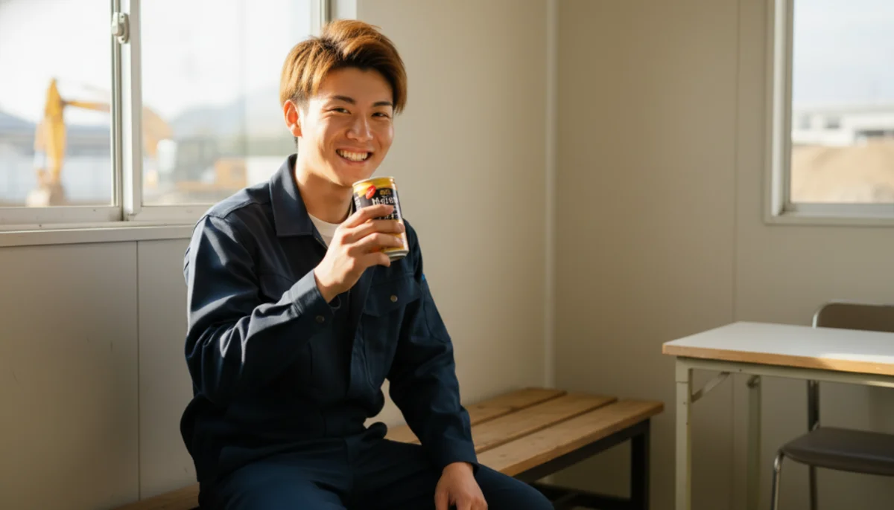

INTERVIEW
社員の声
「先輩が笑わせてくれるから毎日楽しい！」
フラフラしてた俺が、一丁前のプロになるまで。
入社前、どんなことで悩んでいましたか？
高校を卒業したものの、特にやりたいことがなくてフラフラしていました。フリーター生活でコンビニの夜勤をダラダラやっていたんですが、「このままじゃさすがにヤバいな…」という焦りは常にありました。
体を動かす仕事でガッツリお金を稼ぎたいと思っていたものの、学歴や特別なスキルもないので、自分が「何者かになれる場所」があるのかどうか、ずっと不安でしたね。
蒼翔に応募する際、不安だったことは？
「鳶職」とか「建設業」って、正直言って怒号が飛び交うブラックなイメージがありました。ヤンチャな世界だし、「使えねぇな！」って怒鳴られたり、最悪手が出たりするんじゃないかって、ぶっちゃけかなりビビってました（笑）。
でも蒼翔の求人に「ヤンチャな未経験でも、礼儀さえあればイチから教える」って書いてあったので、履歴書もないまま、思い切ってスマホからLINEでメッセージを送ってみたんです。

入社の「決め手」は何でしたか？
面接で社長や職長と話した時、すっごく自分を一個の「大人」として扱ってくれたんです。
「うちでお前を立派な職人にする。高価な道具も全部買ってやるし、最初は下回りの安全な仕事からだ。その代わり、仲間や挨拶で嘘だけはつくな」ってまっすぐ言われて。こんな真剣に向き合ってくれる大人がいるんだって感動して、その場で「やります」って言いました。

今、どんなやりがいを感じていますか？
入社して1年経ちますが、毎日先輩たちが冗談ばっかり言って笑わせてくれるのでめちゃくちゃ楽しいです。もちろん現場に入ったら安全のために怒られることもありますけど、「理不尽な怒られ方」は絶対されません。
初月で月給を30万もらった時、親にスシを奢ったら泣いて喜ばれました。今は会社のお金で資格を取らせてもらってて、早く「職長」になってデカい現場を回すのが目標です！

他の社員インタビューを見る